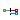
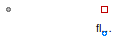

Table of Contents
- User's Guide
- Blocks
- Conditions
- Assemblies
- Regions
- Subregions
- Connectors
- Characteristics
- Units
- Quantities
- BaseClasses
Download
- Latest: FCSys-2.0.zip (**Please check back soon or contact kdavies4 at gmail.com.)

| Name | Description |
|---|---|
| Adapter to connect e- between FCSys and Modelica (electrical and heat only) | |
|  FluidNonionic | Adapter to connect a single nonionic fluid species between FCSys and Modelica |
| Adapter to connect a single solid species between FCSys and Modelica (heat only) | |
| Base classes (not generally for direct use) |
 FCSys.Conditions.Adapters.Species.'e-'
FCSys.Conditions.Adapters.Species.'e-'

For additional information, see the PartialSpecies model.
Extends from BaseClasses.PartialSpecies (Partial single-species adapter between FCSys and Modelica).
| Type | Name | Default | Description |
|---|---|---|---|
| Area | A | U.cm^2 | Area of the interface [l2] |
| Side | side | Side.n | Side of the interface w.r.t. this component |
| Type | Name | Description |
|---|---|---|
| Face | face | Connector for linear momentum and heat of a single species |
| HeatPort_b | heatPort | Modelica heat port |
| NegativePin | pin | Modelica electrical pin |
model 'e-' "Adapter to connect e- between FCSys and Modelica (electrical and heat only)" extends BaseClasses.PartialSpecies(redeclare FCSys.Characteristics.'e-'.Graphite Data); parameter Q.Area A=U.cm^2 "Area of the interface"; parameter Side side=Side.n "Side of the interface w.r.t. this component";Modelica.Electrical.Analog.Interfaces.NegativePin pin "Modelica electrical pin"; equation // Efforts Data.g(face.T, inSign(side)*face.mPhidot_0/A) = Data.z*pin.v*U.V "Electrical potential"; // Conservation (no storage) 0 = A*face.J + pin.i*U.A/Data.z "Material";end 'e-';
 FCSys.Conditions.Adapters.Species.FluidNonionic
FCSys.Conditions.Adapters.Species.FluidNonionic
The electrical connector (pin) is only included
if the species is ionic.
For additional information, see the PartialSpecies model.
Extends from BaseClasses.PartialSpecies (Partial single-species adapter between FCSys and Modelica).
| Type | Name | Default | Description |
|---|---|---|---|
| Area | A | U.cm^2 | Area of the interface [l2] |
| Side | side | Side.n | Side of the interface w.r.t. this component |
| Material properties | |||
| replaceable package Data | Characteristic | Characteristic data (FCSys) | |
| Type | Name | Description |
|---|---|---|
| Face | face | Connector for linear momentum and heat of a single species |
| HeatPort_b | heatPort | Modelica heat port |
| FluidPort_b | fluidPort | Modelica fluid port |
model FluidNonionic "Adapter to connect a single nonionic fluid species between FCSys and Modelica" extends BaseClasses.PartialSpecies; parameter Q.Area A=U.cm^2 "Area of the interface"; parameter Side side=Side.n "Side of the interface w.r.t. this component"; replaceable package Medium = Modelica.Media.IdealGases.SingleGases.H2O constrainedby Modelica.Media.Interfaces.PartialPureSubstance "Medium model (Modelica)"; Medium.BaseProperties medium "Base properties of the fluid";Modelica.Fluid.Interfaces.FluidPort_b fluidPort(redeclare final package Medium = Medium) "Modelica fluid port"; equation // Thermodynamic state and properties medium.p = fluidPort.p; medium.T = heatPort.T; medium.Xi = ones(Medium.nXi)/Medium.nXi; // Efforts face.mPhidot_0 = inSign(side)*A*fluidPort.p*U.Pa; medium.h = fluidPort.h_outflow; // Conservation (no storage) 0 = face.J*A + (fluidPort.m_flow/medium.MM)*U.mol/U.s "Material"; // See the partial model for additional equations.end FluidNonionic;

For additional information, see the PartialSpecies model.
Extends from BaseClasses.PartialSpecies (Partial single-species adapter between FCSys and Modelica).
| Type | Name | Default | Description |
|---|---|---|---|
| Material properties | |||
| replaceable package Data | Characteristic | Characteristic data (FCSys) | |
| Type | Name | Description |
|---|---|---|
| Face | face | Connector for linear momentum and heat of a single species |
| HeatPort_b | heatPort | Modelica heat port |
model Solid "Adapter to connect a single solid species between FCSys and Modelica (heat only)" extends BaseClasses.PartialSpecies; equation face.J = 0 "Closed";end Solid;